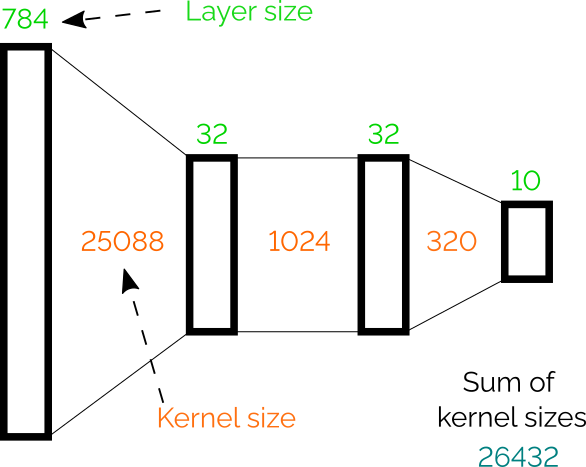
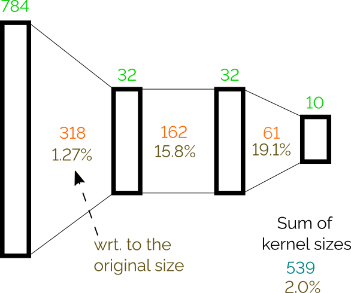
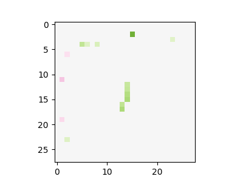
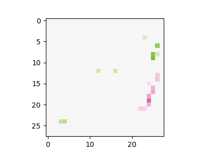
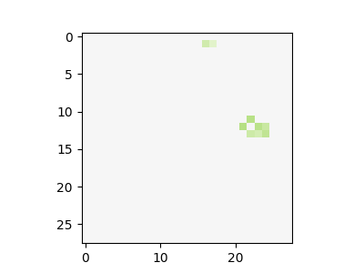
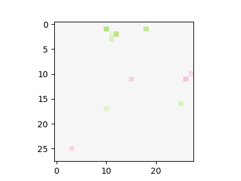
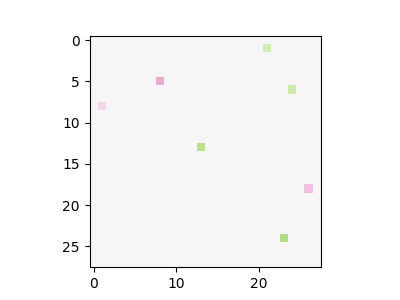
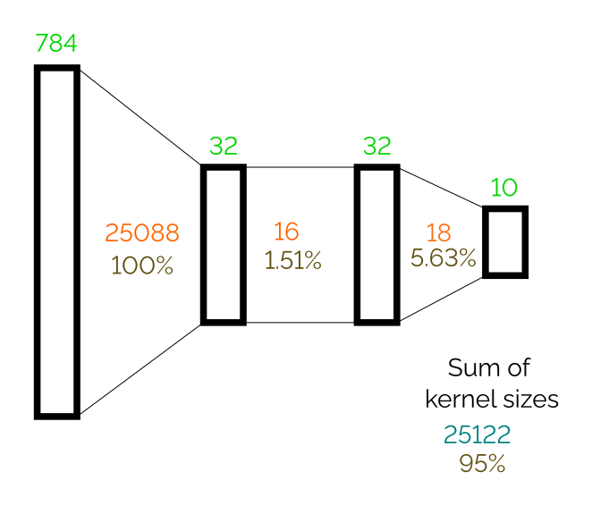

Illustration of the dense/sparse viewpoint of one of the authors.
The goal of this text is to shed some light on the question of whether making a neural network sparser also makes it more interpretable. To this end, we perform a series of experiments focused on pruning a simple neural networks visualising the resulting network as a flowgraph. This visualisation is only useful for sparse networks, as we will demonstrate in the following sections.
There are quite natural arguments for supporting the claim that sparser systems should be more interpretable than dense ones. Debugging a system with many weights and interconnections intuitively seems more complex than to do the same for a sparser system with less parameters and connections. High connectivity is one of reasons why neural networks are not considered much transparent.
However, there are reasons to believe the opposite may be true.
Human-recognizable features are often complex objects - such as in an image
classification task, where humans recognize faces, dog ears, and trees as
opposed to simple patterns of white noise. There is hence a risk that making a
system sparser could lessen it's capacity to work with such high-level concepts.
In other words, a dense system may be able to use complex but
human-interpretable features, whereas a sparse system wouldn't have the capacity
to reconise these features and hence focus on simpler features which are less
meaningful to humans. There is also the observation in Engstrom et al.
To test whether sparsity is good for interpretability, the obvious thing to do is to get a sparse neural network, and see whether it's easier to interpret. To do it we need following things: a neural network, a pruning method to produce a sparse network, and an interpretability method to apply to this sparse network.
Neural network. We will use a simple network of the following architecture trained on MNIST (2 hidden layers of size 32 with ReLU activations; in total 26432 weights in kernels): 
This architecture gets 95+% accuracy on the MNIST test set after three epochs of training.
Pruning method. The lottery ticket hypothesis
Gaining insight. Having matrices with many zeros is not in itself helpful. We need to use an interpretation method to take advantage of this sparsity. Because we hope for quite a sparse representation at the end, chose to visualize the network as it's flowgraph.
To demonstrate how this works, we'll use the following computation: $$\begin{bmatrix}5 & 3\\2 & 1\end{bmatrix} \times \begin{bmatrix}i_0\\i_1\end{bmatrix} = \begin{bmatrix}\text{output}_0\\\text{output}_1\end{bmatrix}$$ This can be represented as the fllowing flowgraph:
When we apply the lottery ticket pruning method on all layers, we can prune the network to 2% of its original size (leaving only 539 weights) and still achieve 90.5% accuracy on test set. For more detail on the number of weights per layer see the following figure: 
Now we can apply our flow-graph visualisation on the pruned network. The output is a graph with 963 vertices and 1173 edges. Note that for this figure and all following, we are rounding values to two decimal places.
As we can see, the flowgraph is quite still quite dense, and it's difficult to
extract any insight into how the network behaves from it. To make it clearer,
we can exploit the following observations: Many vertices and corresponding
edges are from the input layer to the first hidden layer. We can detect dot
product operations in the first layer and simply visualize weights as a 2D
image, because the first layer is directly connected to the pixels. For
example, instead of the following dot product:
$$
0.82i_{[4, 24]} - 0.72 i_{[11, 4]} - 0.72 i_{[11, 14]} + 0.99 i_{[15, 9]} - 0.98 i_{[26, 8]} - 0.92 i_{[27, 17]}
$$
(where $i_{[x, y]}$ is an input pixel at position $[x, y]$)
we can instead use the following image:
Color intensity is used to show absolute value; green is used for positive
values; red for negative, and gray is the zero.
A further simplification is to display only subgraph of the flowgraph that is relevant for each output separately. While it loses information about what is reused between outputs, it provides more readable graphs.
Combining these two simplifications, we get the following visualisation:
Here we can observe that some filters on the input are relatively interpretable, and it is clear what shapes they detect:
  
On the other hand, some of them look more like random pixel detections:
 
The computation after the initial layer still remains relatively dense and hard to understand. It is now possible to track the flow of individual values through the graph in most places, but we can do better.
To get more insight, we can also visualize flowgraphs on individual inputs. This allows us to visualize values flowing between nodes; the thickness of lines corresponds to the absolute value of the scalar value produced by a source operation while green lines carry positive values, red lines carry negative values, and gray lines are exactly 0.
Also, for each visualized dot product, we show the result of applying this filter to the input image (that is, the result of the dot product multiplication of the input and the weights). This is shown as the right-hand figure next to the dot product filter visualisations at the top of the flowgraph.
The following figure shows this visualisation for six random images from the test set (the values in square brackets in the nodes are the actual values that flow through the graph):
The figure shows that it relatively trackable to see which part of the network contributes to the final decision. For example, let us see how the probability that the input is digit 0 (output_0) is computed. For the digit 1 input, it is clear that the decision to not classify it as a 0 is heavily influenced by one specific dot product that detects pixels in the middle of the figure. Another observation is that there are two main branches in the flow that plays an important role of classifing digit 0 correctly (i.e. digit 0 and output_0). It mixes together a detector of a bottom pixels and detection of some specific pixels. For the sixth input (digit 6) is used, it is not classified as 0 even though some of detectors are positively triggered (similarly to case with input '0'); however, the detector of the central pixels overweights and produce a negative score.
Let us revisit the idea of pruning. We have pruned the network as much as possible to get a more understandable object then a fully connected network. However, there is space for trade-offs; we don't need to prune each layer equally, and could trade off pruning some layers more to prune other layers less.
Specifically, in our case we have a visualization of the first layer who's interpretability is not influenced as much by the sparsity. This allows us to completely disable pruning of the first layer. With this approach we get the following network flowgraph that has 93.5% accuracy on the test set: 
The network has 95% of its original weights, but last two kernels are several times smaller than in the previous case. This gives us a significantly simpler flowgraph. It can be now easily shown in one diagram for each outputs without loosing clarity. The following figure shows resulting flow graphs applied on six figures from the testing test.
One interesting observation is that this network returns a constant value for output_2. This means that the digit 2 is a kind of reference point; an input is classified as digit 2 if other outputs are sufficiently suppressed.
We can again easily track down properties like digit 1 is not classified as 0 because of the pixel in the middle part. In this version, it is less clear what each dot products detects, but on the other hand it very straightforward what is happening with each dot product value in the rest of the computation.
The approach of pruning and visualization of flow graphs may be also applyied to other domains such as reinforcement learning for continuous control. We use the classic OpenAI CartPole-v0 environment. The following figure shows a network trained with DQN, and then pruned when reaching maximal score, on the CartPole environment. For this network, we can observe that one input (i_1, which is the cart velocity) is completely ignored, while the agent still gains the maximal score.
On the other hand, our approach doesn't seem useful for convolutional neural networks, since applying the convolutional filters over the whole output of the previous layer is a part of the algorithm and it is not pruned with weights. Therefore, a convolutional filter even with a single weight may produce many connections in the flow graph. The presented approach still produces dense flow graphs even for heavily pruned convolutional networks.
The following figure shows a network created as 3 convolutional layers (6 channels, 3x3 filters, without padding, kernel sizes: 54, 324, 324) followed by a dense layer (kernel size: 29040, no activation). The layers was pruned to 6 (11%), 23 (7%), 23 (7%), and 135 (0.46%) of their original sizes. The resulting network has only 80% accuracy and quite a low number of weights, but still produces a relatively large and dense graphs. The graph for computing output_7 is the largest one (1659 vertices).
While we may not have conclusively answered the question posed in the title, we have generated insight and intuitions with this simple example. As expected, pruning dense object may lead to more interpretable objects; however, there are trade-offs. Only counting the number of weights in the final object is probably not the ideal metric to get a most interpretable result. In our experiment, the later flowgraphs (of dense nets) where more interpretable despite having many more weights than the previous examples. This points to an answer to the opposing views of sparsity possibly giving both more and less interpretability; In some settings sparsity is beneficial in giving humans understanding and transparency, but when a visualisation which doesn't rely on sparsity can still produce results that humans can understand and interpret, the sparsity isn't necessarily useful.
This text was created as a part of AISRP.